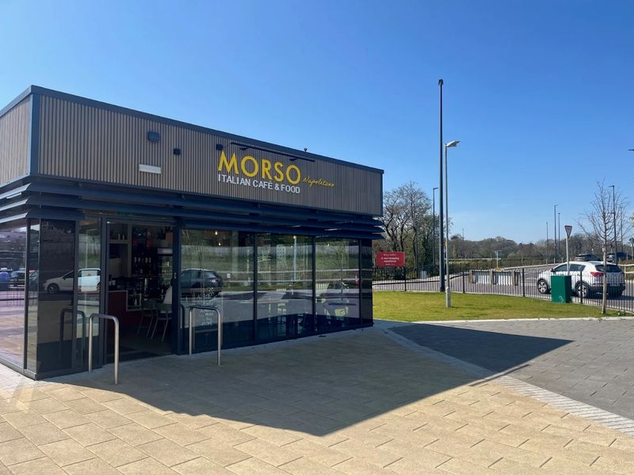
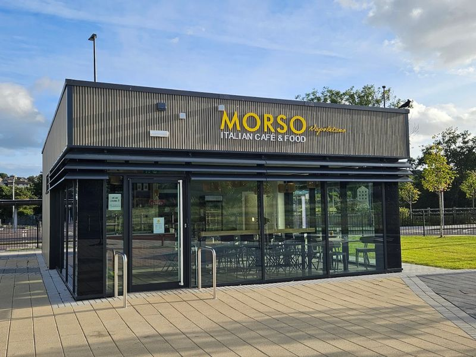

The name
A morso is a bite — un morso di Napoli, right here in Carrigaline.
Antonio runs the kitchen at Morso Napoletano: beef ragù lasagna layered the long way, cannelloni filled fresh, aubergine parmigiana baked to order, and a pizza-by-the-slice counter that doesn't quit.
It's not a big room — a glass-fronted kiosk looking out over Carrigaline West — so everything gets made in view, a few feet from where you're sitting.